Altkred · Invoice financing · 2026
Altkred lets Indian SMEs sell unpaid invoices to financiers who bid for them. I designed the whole thing: signing up, bidding, getting paid — and what happens when a payment fails.
01 Thirty seconds on the subject
That one difference explains nearly every decision on this page.
An SME delivers goods. The buyer accepts them and says: we'll pay ₹38 lakh in 90 days.
They pay the SME ₹37.2 lakh today. The ₹80,000 gap is their fee.
On day 90 the buyer pays the full ₹38 lakh — to the financier now, not the SME.
That's it. No loan, no collateral — the financier bought something, they didn't lend against it. Reverse factoring is the same trade started by the buyer: a big company lists invoices it has approved, and its suppliers take the cash early. The big company's credit is what makes the rate cheap.
02 Why it needed building
One has done the work and can't get paid. The other has money and no safe way to lend it.
Rakesh makes auto parts near Pune. Sixty staff. About ₹2 crore of his money is always sitting in unpaid invoices.
He paid for steel in March. He paid wages in March and April. The invoice pays out in June.
To bridge it he can pledge his factory, or give his buyer a 3% discount. The bank has said no twice.
"I don't need a loan. I've done the work and they've accepted the goods. I need the money when I need it."
Ananya lends to SMEs at an NBFC. She has ₹40 crore to put out this quarter.
But she can't check the goods arrived. She can't check the buyer accepted the invoice. And if he doesn't pay on day 90, she has no way to collect.
So she passes.
"I'm not avoiding this market. I'm avoiding an invoice I can't verify and a payment I can't enforce."
The gap, in three numbers
of Indian SMEs can borrow from a bank at all.
of SME money is stuck in unpaid invoices. The law says 45 days.
of SMEs use TReDS, the government-backed alternative.
Deloitte, State of Financial Services in India 2025 · MSME delayed-payment estimates, Mar 2024 · TReDS registration data, Mar 2025
All three come down to one thing. An invoice is only worth money to a stranger if it can prove itself. That's what I was designing for.
03 Who's on the platform
I spent two weeks trying to pick a primary user. Every version was worse. All four have to work in the same screens.
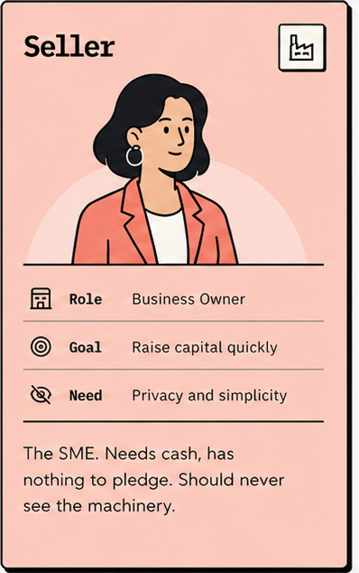
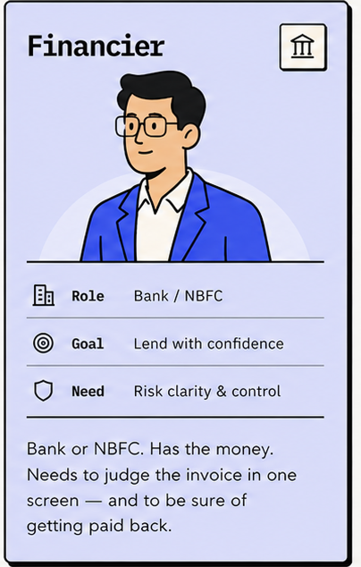
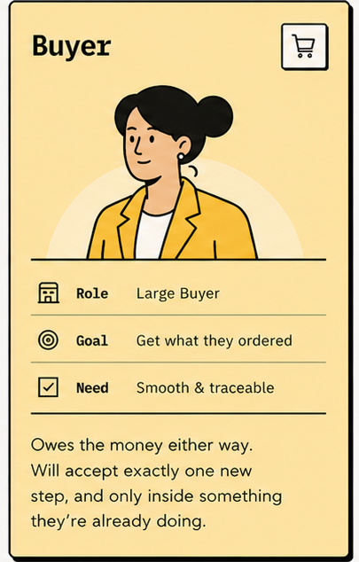
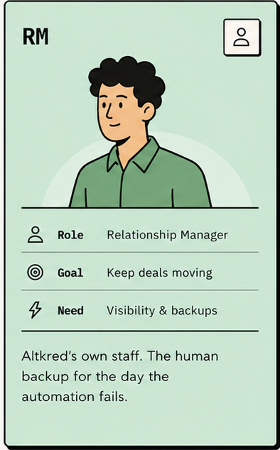
04 The approach
The four don't just share a marketplace — they share the same screens. So the design couldn't favour one without breaking another. Each persona became a rule the whole interface had to keep at once.
The SME sees a number and a date. Risk scoring, insurance, bid mechanics — all real, all hidden. Simplicity is the feature.
Buyer, amount, due date, proof of delivery, and how reliably that buyer has paid — enough to price it without leaving the view.
One payment permission, asked once, inside a flow they're already in. Ask for anything more and they simply don't do it.
When the automation fails, a human always has a logged action to take — never a support ticket and a shrug.
Those four rules only resolve in one order — the order the money actually moves. So that's how the product is built, and how the rest of this page reads: get on, price it, move it, close it. Four parts follow, one per stage.
01 Getting on
Nobody does paperwork well when they're desperate for cash. So all of it happens first — company details, documents, bank setup. The marketplace stays visible but switched off until it's done.
Hide the payment key in settings and let financiers find it.
Grey out Place Bid on the home page until it's added, and say why right there. Without the key we can't take money from their account — so they could win an invoice they're unable to pay for.
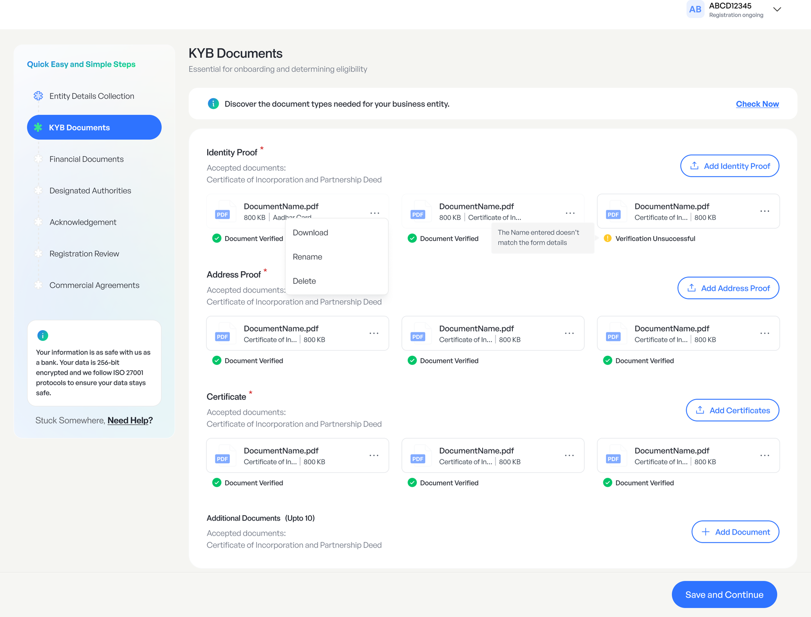
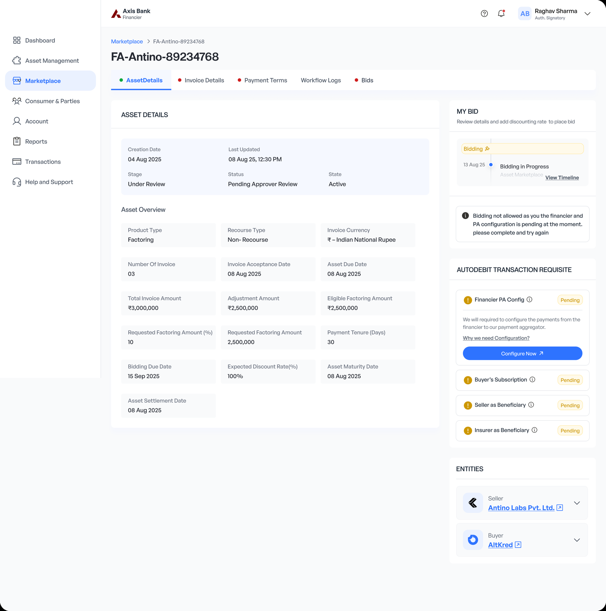
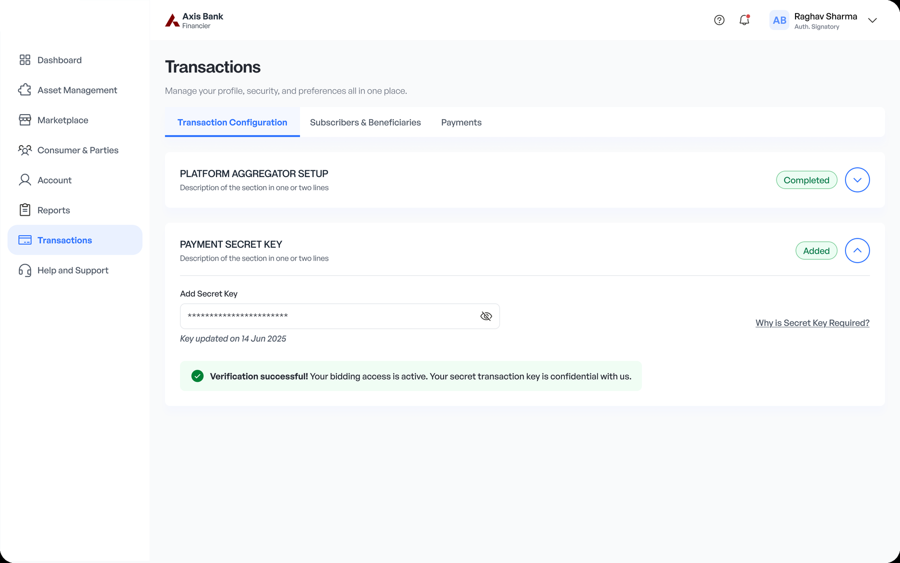
02 Pricing it
Each listed invoice shows the buyer, the amount, the due date, proof of delivery — and how reliably that buyer has paid in the past. That last one matters most. An invoice is only as good as the person who owes it.
Financiers bid against each other. So the seller picks from several offers instead of taking the only one.
One "interest rate" box on the bid form.
Four separate choices instead: the rate and how long for, who pays the interest, the late penalty, and whether it's insured. A bid isn't a number. It's a decision about who carries the risk — and that's exactly what both sides argue about later.
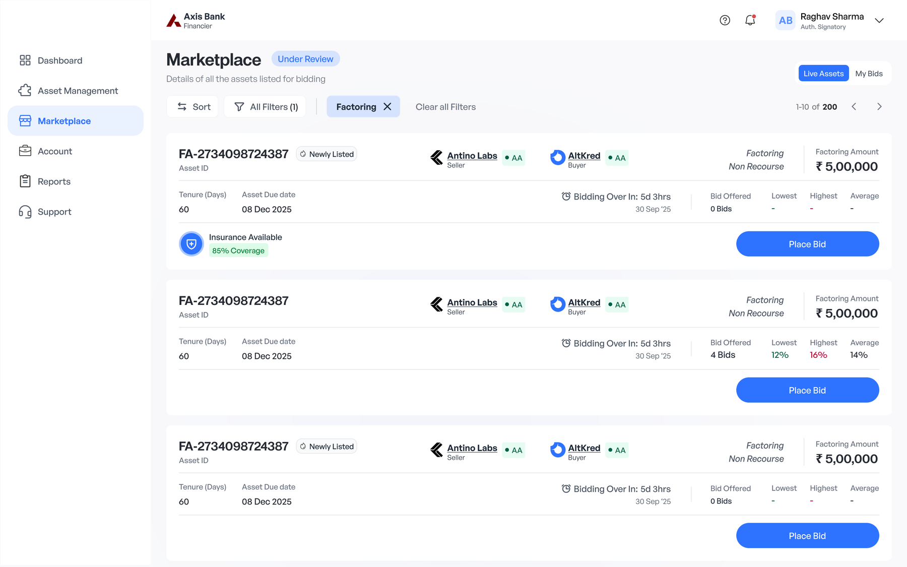
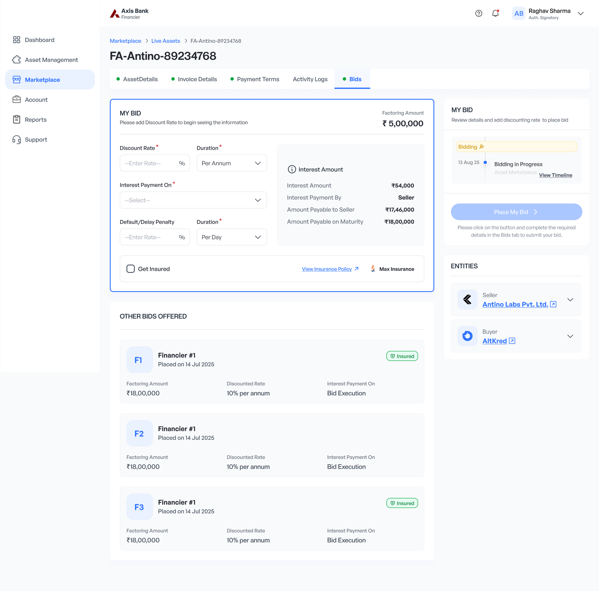
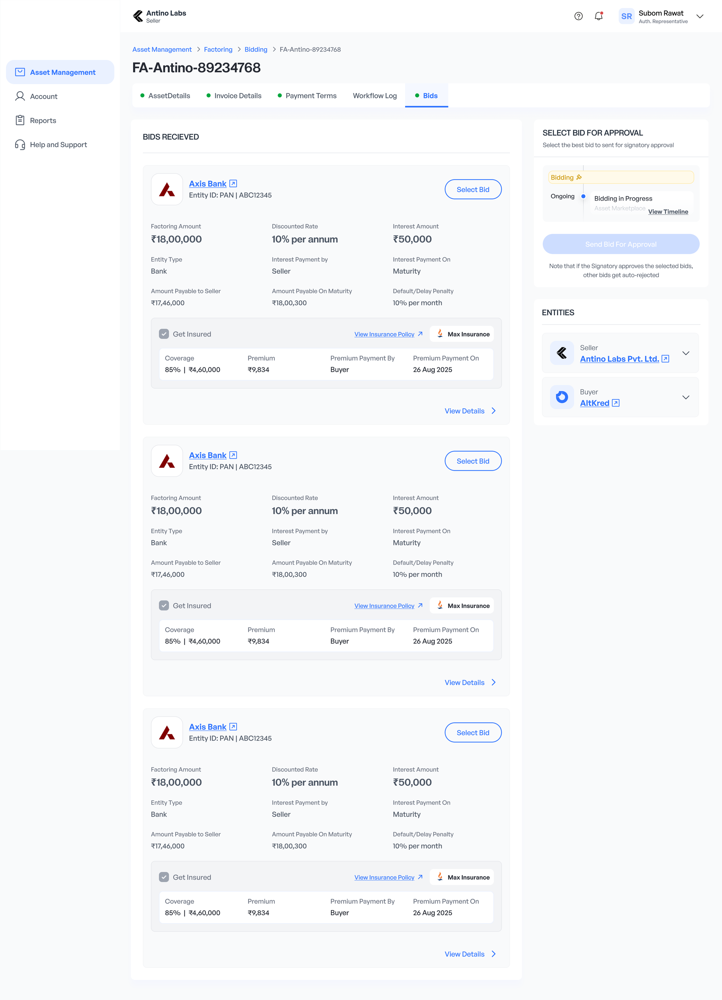
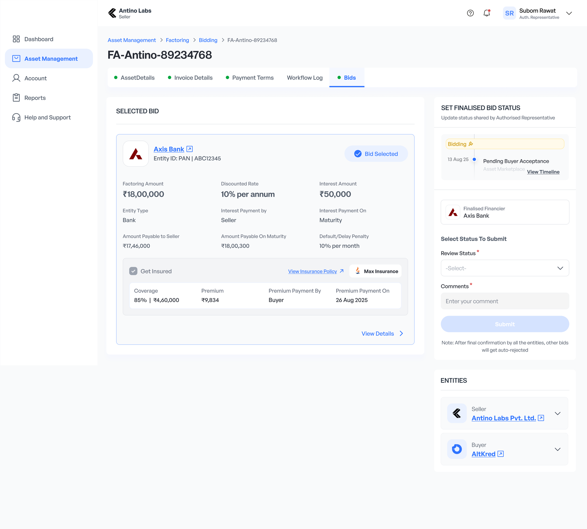
03 Moving it
Four things happen once a bid is accepted. The buyer signs a payment permission. Interest is deducted. Insurance is paid. The funds land.
Every one of those is a place the money can stop.
Ask the buyer to set up the payment permission after the bid is won.
Ask inside the bid approval instead — one screen, one action. Chase a buyer for it afterwards and you never get it. And without it, there's no way to collect on day 90.
Funding screens are still in build — the decision above is the part that mattered.
04 Closing it
On the due date the payment pulls automatically. Usually it works. The rest of the time is where this product is really decided.
The happy path is about a fifth of the screens. A dead end here is somebody's payroll — so nothing ends in "contact support".
Put insurance claims in a separate admin module.
Keep them inside settlement. The worst outcome deserves the clearest screen — and the person handling it is already looking at the failed payment.
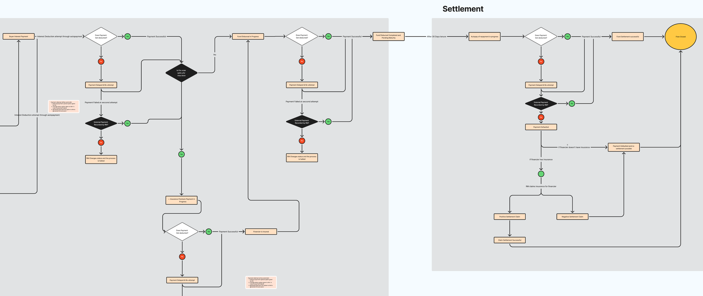
05 Underneath all of it
The board below covers one set of conditions. Change a single one — who pays the interest, whether it's insured, factoring or reverse factoring — and the whole branch structure changes shape.
Mapping those first is why the interface didn't double in size when reverse factoring arrived.
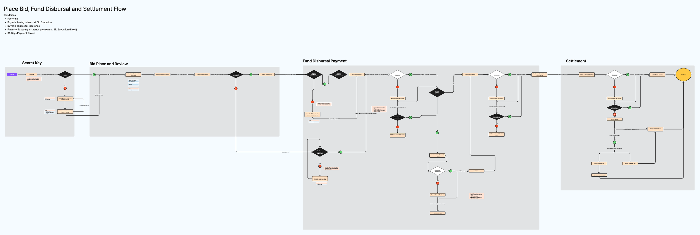
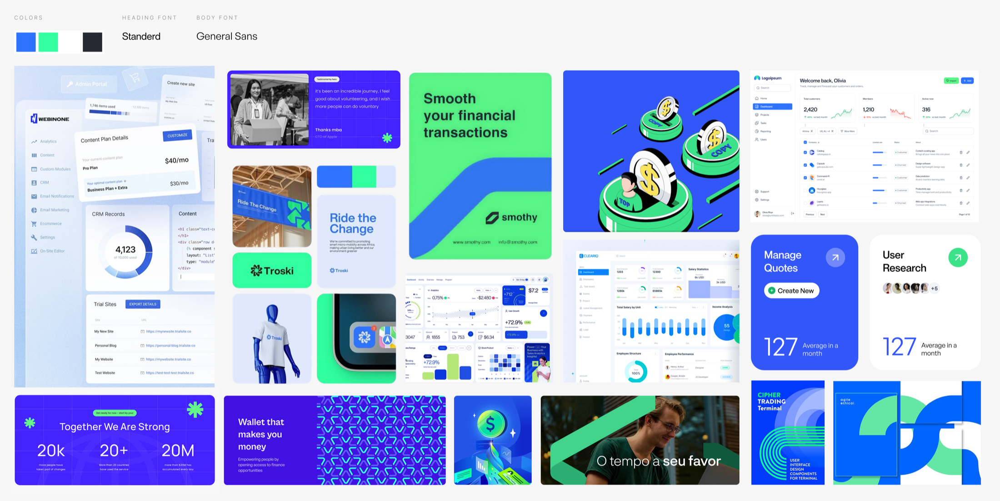
06 What it changes
Same payroll, same invoice, same buyer. List it, take the best bid, get paid.
Accepted invoice → cash in hand
And everything else that changed shape
Altkred is still in build. These are the targets the flows were designed against, taken from the baseline in discovery — not measured outcomes. I'll put real numbers here when there are some.
07 What I'd do differently
I designed the happy path in week one, then spent six weeks on what happens when a payment bounces. Starting at the bounce would have made the happy path better. That's where a payments product earns trust.
I kept trying to pick a main user and kept getting a worse flow. The personas only became useful once I accepted that all four had to fit the same screens.
I started with a competitor teardown. It told me what the category looks like. What actually shaped the product was the 45-day rule and a 2021 law that opened this market to thousands of lenders instead of seven.
Rakesh never needed a loan. He needed someone to treat his invoice like the money it already was.